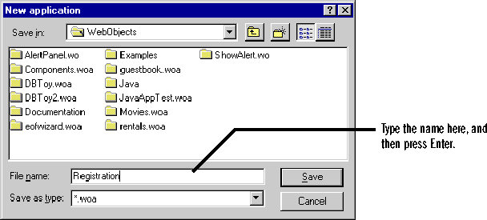
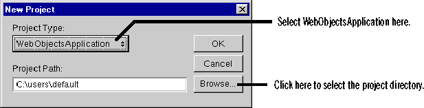
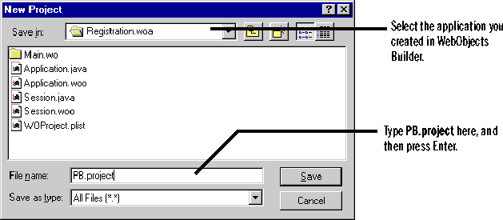

Creating a Compiled Application
 Table of Contents
Table of Contents  Previous Section
Previous Section
Create a project
Now that Project Builder and WebObjects Builder are set up correctly, you are ready to create the application. To create a Java application, you need to create it both as a WebObjects Builder application and as a Project Builder project.
- In WebObjects Builder, choose File
 New Application.
New Application.
- Type Registration as the application's name, and then press Enter.

- Relaunch Project Builder, and then choose Project New.
- Select WebObjectsApplication from the Project Type pop-up list.
- Click the Browse button.

- In the Open panel that appears, navigate to the Registration.woa directory (the application you created in step 2), which is under <DocumentRoot>/WebObjects, and click Open.
- Type PB.project in the File name field and click Save. (PB.project is a file Project Builder uses to record information about your project.)
- Click OK.

You created Registration.woa in WebObjects Builder first so that Project Builder would know it is a Java application. Because you set the WebObjects Builder language preference to Java, WebObjects Builder creates .java files where it usually creates script files (for example, Application.java, Session.java, and Main.wo/Main.java). When you create a WebObjectsApplication project, Project Builder includes the files created by WebObjects Builder in the project.
If you browse through the project in Project Builder's main window, you'll find these files:
The following sections discuss some other parts of the WebObjects application that are created for you.
Table of Contents  Next Section
Next Section